Обзор
Активу не назначен шейдер Crytek
Проблема: Когда некоторым лицам или объектам в вашей сцене не назначен шейдер Crytek, вы получите следующую ошибку: В шейдере Crytek не установлен следующий материал: Face.
Разрешение: Чтобы исправить эту ошибку, выберите объект или лица и в Material Editor измените тип шейдера на Крайтек Шейдер.
Рис1: Ошибка «Следующий материал не установлен для Crytek Shader: Face». 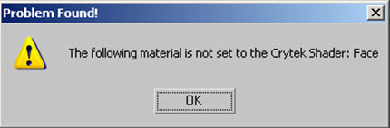
Рис.2: Изменение шейдера на Crytek Shader. 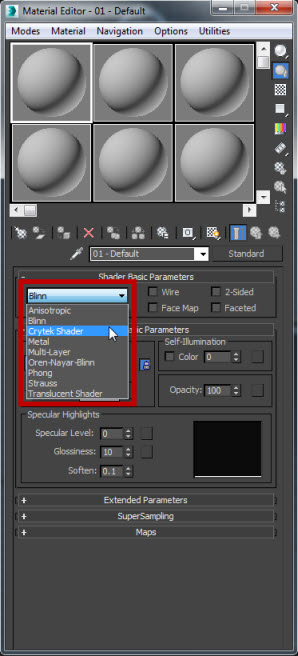
Несколько ресурсов экспортируются как одна большая сетка, а не как отдельные.
Проблема: Когда вы экспортируете несколько ресурсов в своей сцене из 3DS Max и импортируете их в CRYENGINE, вы можете видеть, что все ресурсы находятся в одном узле и только в одном файле.
Разрешение: Вам необходимо убедиться, что флажок Экспорт файла для каждого узла установлен, чтобы избежать экспорта нескольких фиктивных узлов как одного файла. Например, если у вас есть разные части здания, которые вам нужно экспортировать в файл CRYENGINE.
Рис.3: Включение флажка «Экспортировать файл для каждого узла». 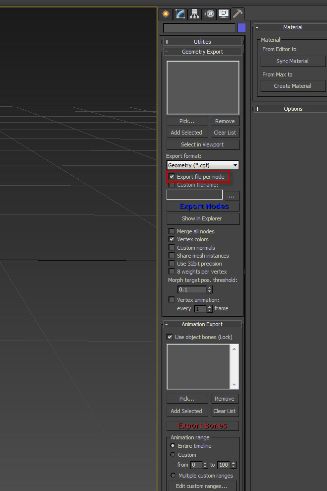
3DS Max мгновенно аварийно завершает работу во время экспорта
Проблема: 3DS Max мгновенно выходит из строя при экспорте ваших ресурсов. Одной из основных причин может быть то, что уровни LOD были связаны под фиктивным узлом.
Рис.4: Связывание LODов под фиктивным узлом. 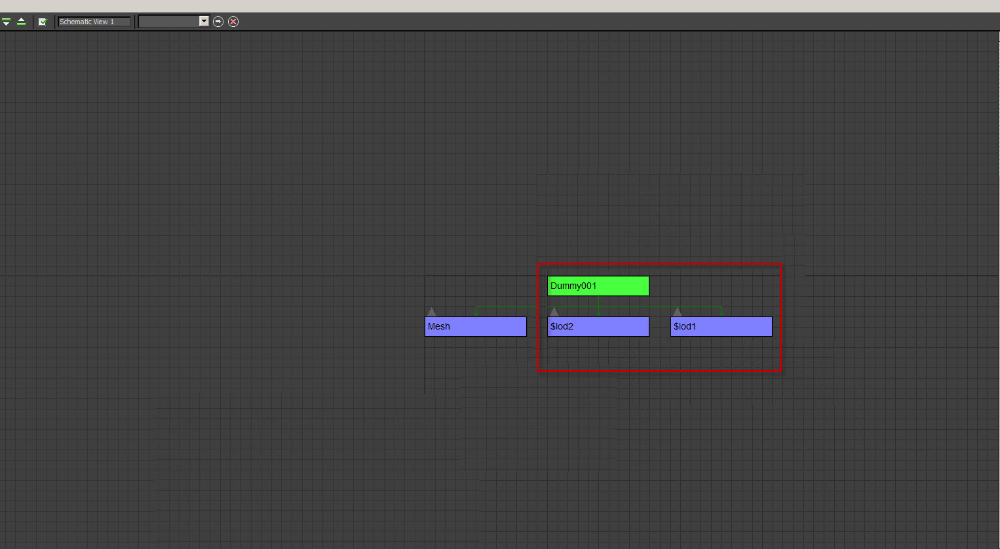
Разрешение: вам необходимо связать уровни детализации под основным узлом сетки.
Рис5: Связывание LODов под основным узлом сетки. 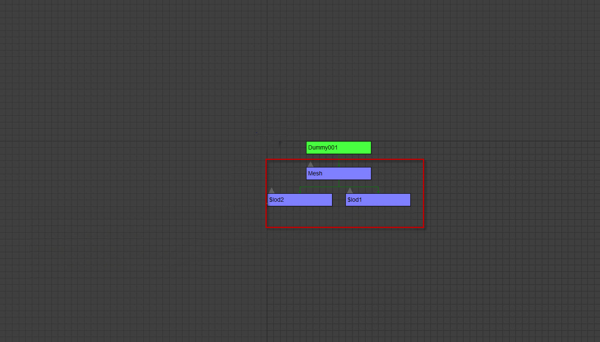
Более двух треугольников имеют общее ребро
Проблема: При экспорте ресурсов в окне экспорта CRYENGINE отображается следующая ошибка: "Не удалось скомпилировать геометрию в узле......- Более двух треугольников имеют общее ребро.". Это означает, что у вас могут быть грани double, прикрепленные друг к другу, или две грани, которые соединены с одним и тем же ребром, но вершины не сварены.
Рис.6: Окно журнала экспорта CRYENGINE. 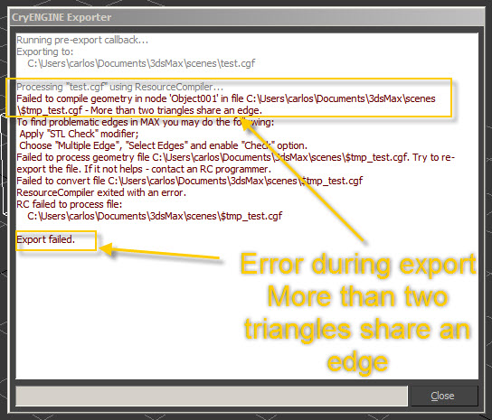
Разрешение: Нажмите на Изменить вкладку, а затем в раскрывающемся меню «Список модификаторов» выберите STL Проверить.
Рис.7: Выбор проверки STL из списка модификаторов. 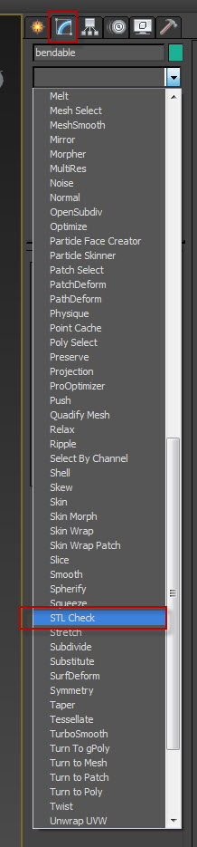
После активации модификатора STL он подсветит красным те лица, которые необходимо исправить.
Рис.8: Выделение ребер, общих для геометрии. 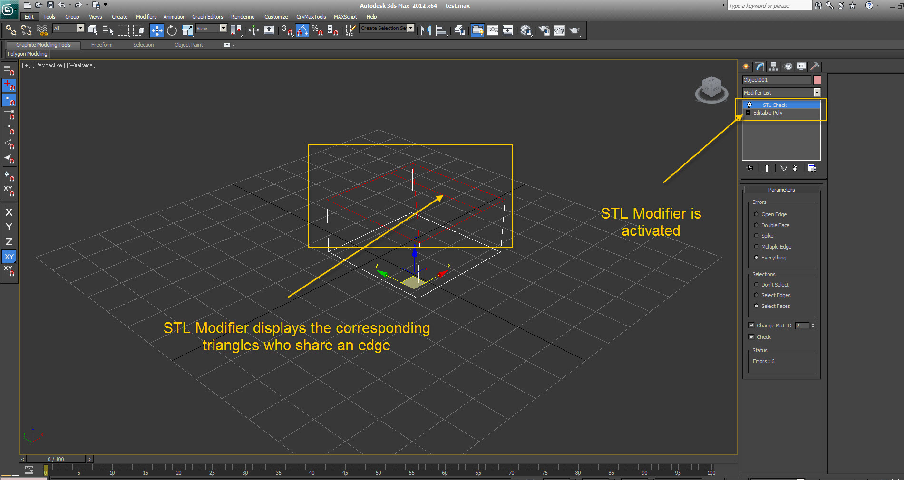
Раздутый размер файла *.cgf
Проблема: Когда вы экспортируете свой ресурс из 3ds Max и размер экспортированного файла *.cgf очень высок.
Разрешение: Вам следует проверить, включена ли анимация вершин для сцена. Если он включен, обязательно снимите флажок и снова экспортируйте ресурс.
Очень важно! При этом вы не получите ошибки экспорта, поэтому проверьте размер файла.
Рис.9: Обеспечение отключения анимации вершин. 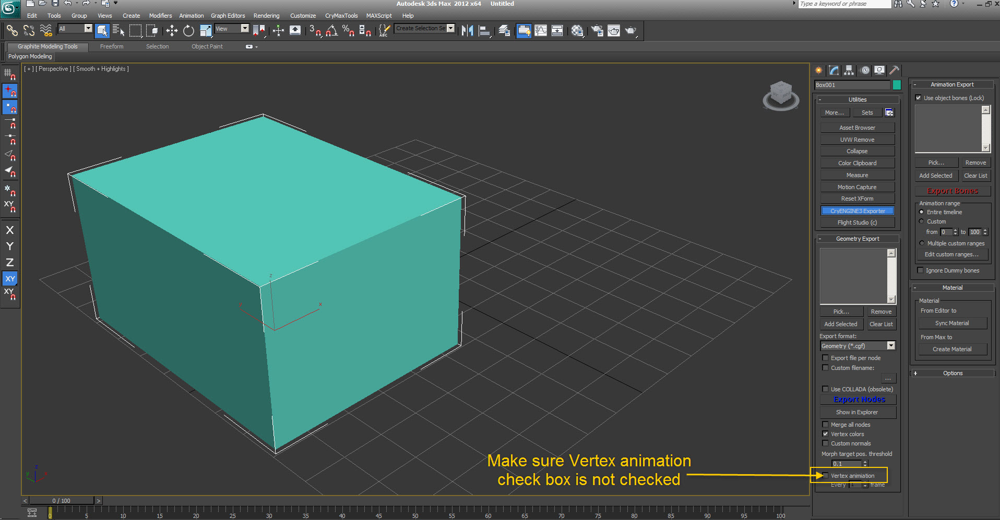
Вырожденные грани и неверная ошибка касательной матрицы
Когда журнал экспортера и/или редактора сообщает об ошибках, подобных этим:
- [\Предупреждение] Неверная касательная матрица в модели: объекты/персонажи/алиен/грунт/grunt_body.chr; касательная и бинормаль параллельны, вершина 2663 из 3545, позиция x=0,000000;y=-0,055068;z=1,489441
- Генерация касательного пространства не удалась!
Рис.10: Сообщения об ошибках вырожденной текстуры. 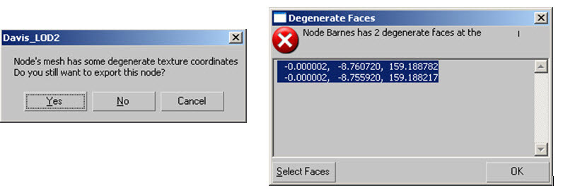
Сообщения об ошибках, упомянутые выше, скорее всего, связаны с так называемыми выродившиеся лица. Вырожденные грани — это треугольники, все ребра которых лежат друг над другом, что выглядит так, будто у треугольника нет площади грани.
Рис11: Обзор дегенеративных лиц. 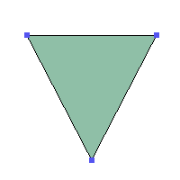
Для этих треугольников не может быть вычислена матрица касательного пространства, которая необходима для всех вычислений затенения в нашем движке, в частности для отображения нормалей. Кроме того, сетки, содержащие только вырожденные треугольники, вызовут проблемы с потоковой передачей текстур, поскольку движок не может рассчитать плотность их текселей.
Как исправить вырожденные грани и неверную ошибку касательной матрицы
Чтобы решить эту проблему, вам нужно удалить такие треугольники из сетки. Сложность в том, что они не всегда заметны, поскольку выглядят как обычное ребро.
В Максе есть cryMaxTools, который может находить такие треугольники и отмечать их.
Чтобы исправить ошибки:
- Выберите сетки, которые вы хотите проверить, а затем в меню CryMaxTools выберите ToolBox. Откроется новое окно с выбранными сетками.
Рис12: Выбор CryMaxTools в 3ds Max. 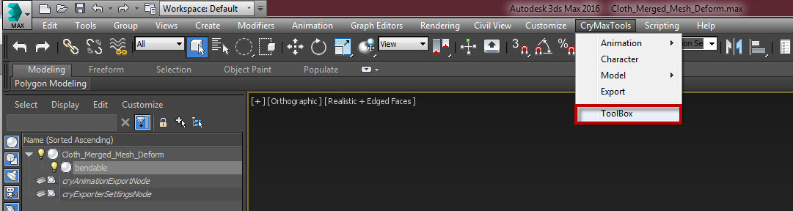
2. Нажмите на CryModeling вкладка, а затем под Поли инструменты выбрать Отметить вырожденные треугольники. Инструмент пройдёт по всем выбранным объектам, чтобы найти вырожденные треугольники, и поместит на них вспомогательную точку.
Рисунок 13: Маркировка вырожденных треугольников в CryMaxTools. 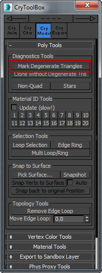
Также помощник точки будет связан с соответствующим объектом и добавлен в новый слой, который содержит только такие вырожденные треугольные маркеры.
Рис14: Размещение вспомогательной точки для объекта. 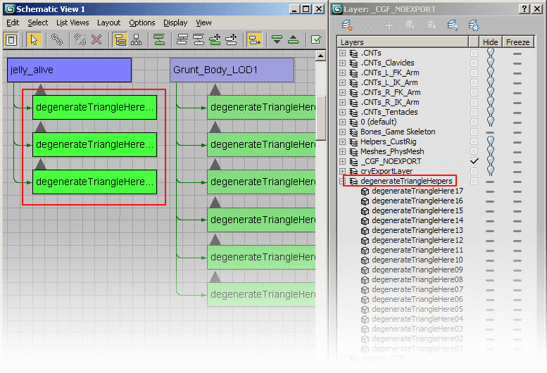
Теперь вы можете просмотреть помощников точек один за другим и разрешить вырожденные треугольники.
Рис15: Несколько примеров разрешение вырожденных треугольников. 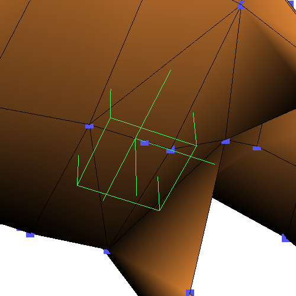 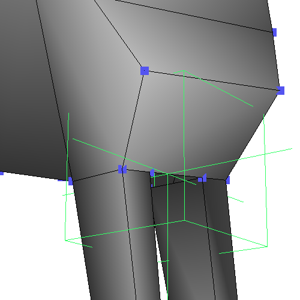
Еще полезные советы
- Ограничивающая рамка вспомогательного узла всегда имеет такой же размер long, как и сломанная грань, поэтому вы получаете представление о том, что ищете.
- Помощников всегда будет столько, сколько вырожденных треугольников: наличие 3 помощников в одном месте означает, что существует 3 вырожденных треугольника.
- Вырожденные грани могут быть частью многоугольника. В частности, полигоны с более чем 4 вершинами могут быть проблематичными, поскольку 3dsmax автоматически триангулирует их, поэтому обратите внимание на триангуляцию.
Рис. 16: Обзор вырожденной грани в многоугольнике. 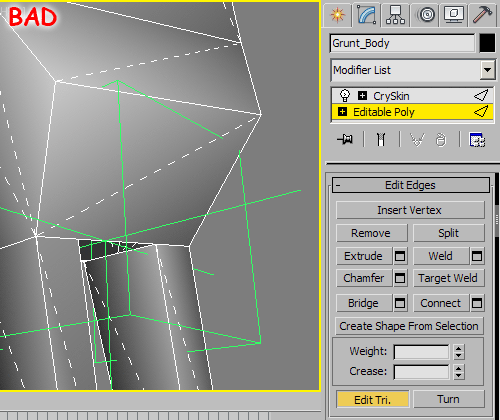
К сожалению, сценарий не может полностью отразить поведение RC, поэтому есть небольшой шанс, что он не сможет найти все вырожденные треугольники так же эффективно, как RC.